Префектура Оита · Юфуин и Беппу · онсэны
Юфуин и Беппу: тихий онсэн у горы, пар «адов» и баня на целебной траве
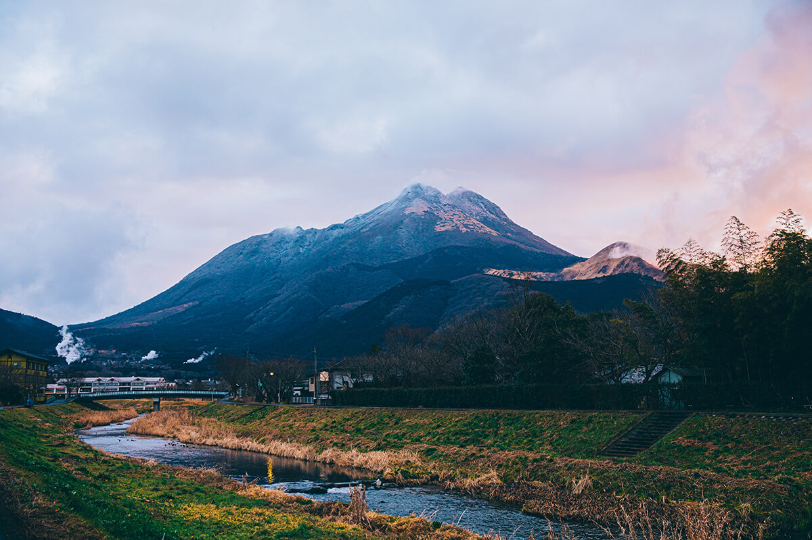
Юфуин и Беппу разделяет меньше часа езды, но это два разных мира. В горной котловине Юфуина отдыхают медленно, среди рисовых террас и каменных оград, а в Беппу из-под земли бьёт столько горячей воды, что на её паре здесь готовят обед.
Юфуин
Курорт, который сам себя сберёг
Юфуин мечтают увидеть многие, кто едет на Кюсю. Городок лежит в котловине, окружённой горами, главная из которых гора Юфу. С её вершины видны залив Беппу и горная цепь Кудзю. Горячих источников здесь три: многоводный Юфуин-онсэн, Юнохира-онсэн, где издавна лечились водами, и Цукахара-онсэн с очень кислой водой, известной как лечебная.
В прошлом эта земля укрывала беглых воинов из разбитого рода Тайра и тайных христиан. Сегодня в Юфуине равняются на курорты юга Германии, где лечат не только водой, но и природой: чистым воздухом, прогулками, пейзажем. По городку и сейчас можно идти мимо старых каменных оград и рисовых террас к речкам, над которыми летом кружат светлячки. Этот вид сохранился потому, что жители не раз отбивались от застройщиков.
В Юфуин стоит приехать без спешки и поселиться в гостинице, которая по душе. В туристическом информационном центре спросите, куда ходят сами местные, и гуляйте так, будто живёте здесь.
Обед
«Юнотакэан» у озера Кинрин
Недалеко от озера Кинрин стоит рёкан «Камэ-но и бэссо», один из самых известных в Юфуине, и при нём ресторан «Юнотакэан». Сюда приходят за сезонными продуктами Оиты: мясом дикого кабана, говядиной «Оита вагю», курицей «Канмури дзидори» и овощами, собранными утром.
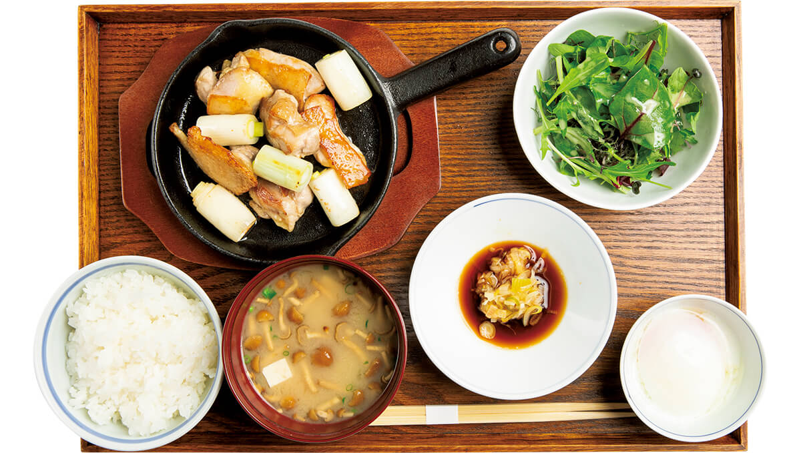
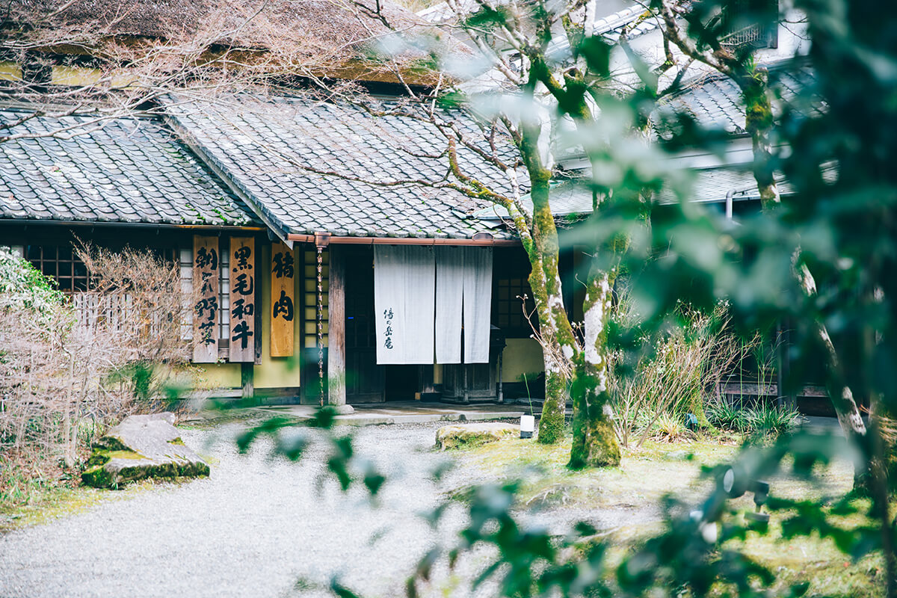
«Юнотакэан»
- Адрес
- префектура Оита, город Юфу, Юфуин-тё Каваками, 2633-1
- Телефон
- +81 977-84-2970
- Часы работы
- 11:00–21:00 (последний заказ)
- Выходные
- нерегулярно
Онсэн
«Цуканома»: вода, которая становится голубой
Онсэн-деревня «Цуканома» подходит и для того, чтобы окунуться на один день, и для долгого лечения водами. Большая открытая купальня устроена так, чтобы у края воды можно было лениво растянуться, как морской котик на камнях. Вода идёт прямо из источника и содержит много метакремниевой кислоты, которую ценят за пользу для кожи. На воздухе она постепенно приобретает кобальтово-голубой цвет. Разовое посещение для взрослого стоило 800 иен в 2020 году.
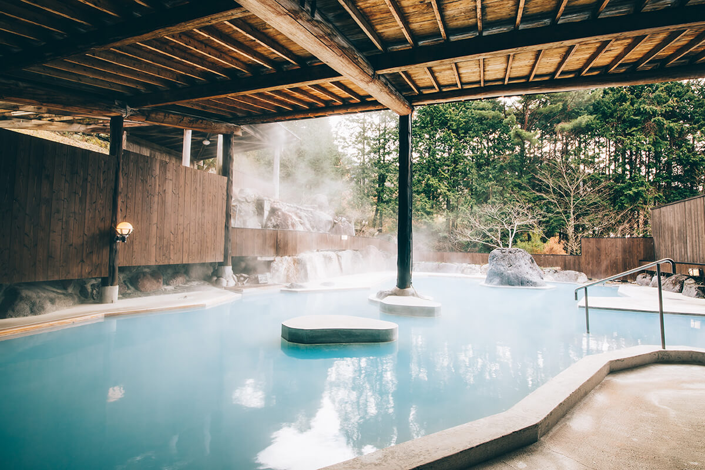
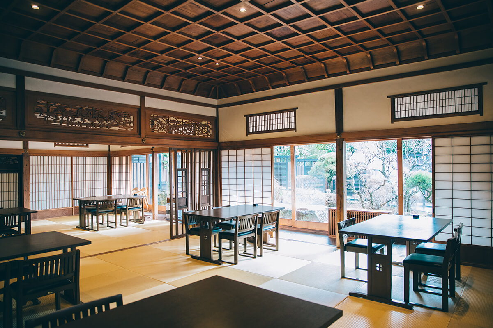
Онсэн-деревня «Цуканома»
- Адрес
- префектура Оита, город Юфу, Юфуин-тё Каваками, 444-3
- Телефон
- +81 977-85-3105
- Часы работы
- 9:30–18:00 (приём на разовое посещение)
- Выходные
- среда
- Цены / Вход
- взрослые 800 иен
Озеро
Кинрин: торий над водой
Озеро Кинрин редкое: на дне бьют холодные ключи, а сбоку в него стекает горячая вода источников. Красиво здесь в любое время года. С берега у святилища Тэнсо, напротив мостков, получается самый загадочный снимок: торий, отражённый в неподвижной воде.
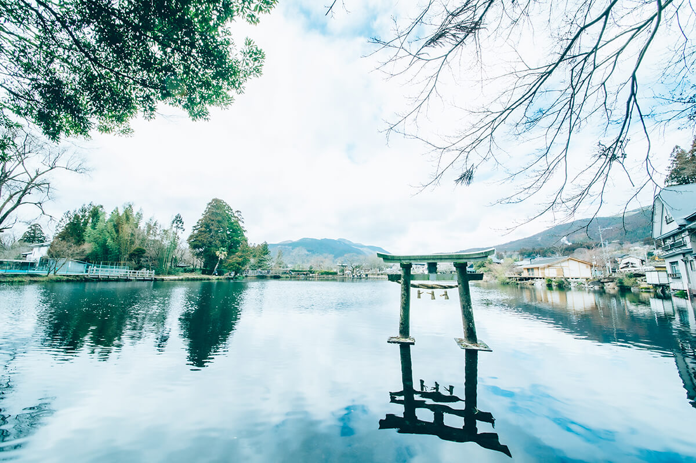
Озеро Кинрин
- Адрес
- префектура Оита, город Юфу, Юфуин-тё Каваками
Беппу
Восемь онсэнов и «ады» Каннавы
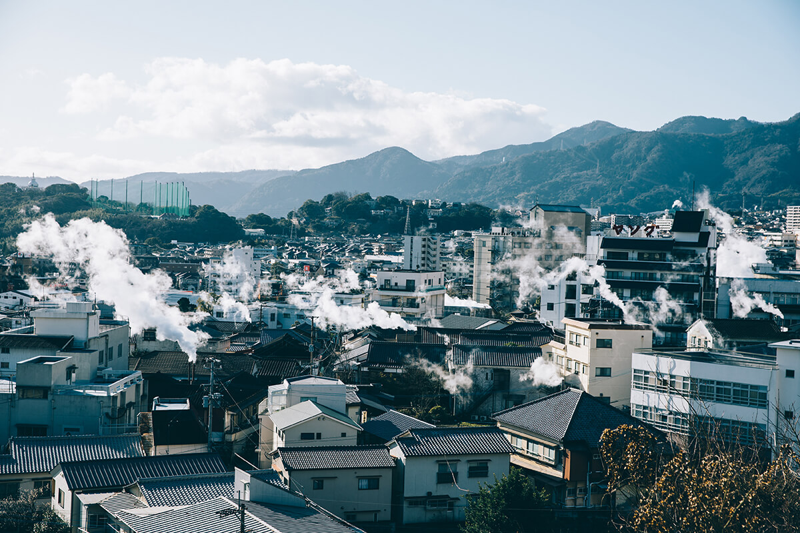
Беппу первый в Японии и по объёму горячей воды, и по числу источников. Здесь восемь онсэн-районов, их вместе называют Беппу-хатто. Хамаваки считают местом, откуда начался Беппу как курорт, Камэгава знаменит песчаными ваннами на пляже, а Мёбан соломенными хижинами, где собирают «цветы» минеральных солей. Гуще всего пар поднимается над Каннавой. Из восьми районов именно здесь лучше всего сохранился дух старого места для лечения водами.
Прогулка по «адам» дзигоку Беппу, среди которых «Морской ад», «Кровавый пруд» и «Белый пруд», известна на всю страну. В Каннаве «адом» до сих пор называют любое место, где из земли вырывается горячий пар.
Отогревшись в онсэне, обязательно попробуйте дзигоку-муси. В котёл «дзигоку-гама», куда подаётся пар из-под земли, ставят большую бамбуковую корзину с рыбой и моллюсками, мясом, яйцами и овощами. От сильного жара вкус продуктов становится плотнее, а минералы из пара солят их ровно столько, сколько нужно. Свежие продукты можно купить в местных лавках и пробовать всё подряд.
Ужин
Yanagiya: обед из пара в старом доме
Тодзи-рёкан Yanagiya работает с эпохи Мэйдзи, а сегодня в старом доме много современных деталей. Есть варианты с питанием, но интереснее снять номер без еды и готовить самим на пару. Набор «мусимоно» с рыбой, моллюсками, мясом и сезонными овощами стоил 1980 иен в 2020 году, его нужно заказывать заранее.
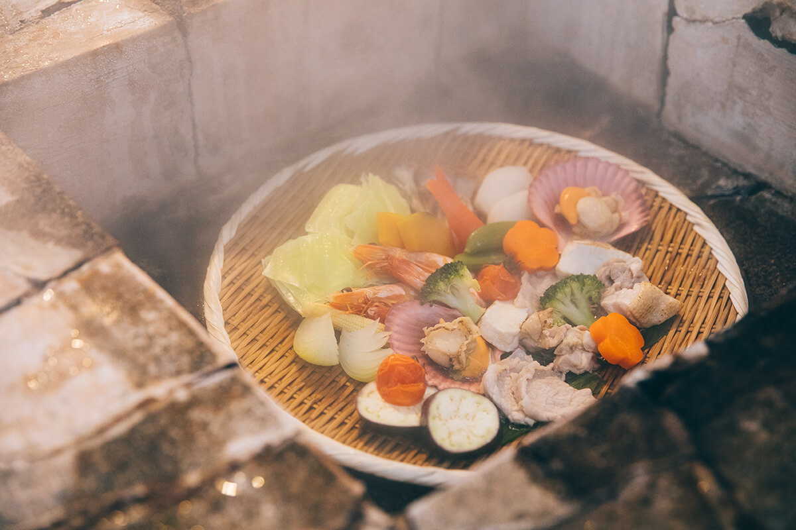
Котёл стоит во внутреннем дворе. Повернёшь вентиль, и в любой момент из него вырывается пар источника, горячий почти как кипяток.
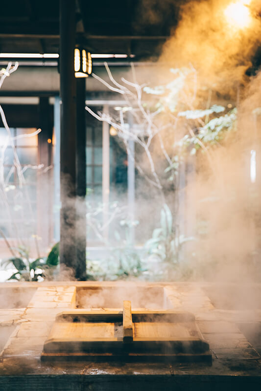
Yanagiya
- Адрес
- префектура Оита, Беппу, Каннава-Ида, 2-куми, улица Каннава-Гиндза
- Телефон
- +81 977-66-4414
- Часы работы
- гостям без ночёвки до 14:00
- Выходные
- без выходных
Ванны
Грязь, песок и пар
В Беппу восемь известных онсэн-районов, и в каждом своя вода и свой способ купаться. В Мёбане есть «Беппу онсэн хоё рандо» с ваннами из минеральной грязи. Большая открытая купальня здесь общая для мужчин и женщин. Сливочная грязь пахнет серой, и её рекомендуем нанести на всё тело.
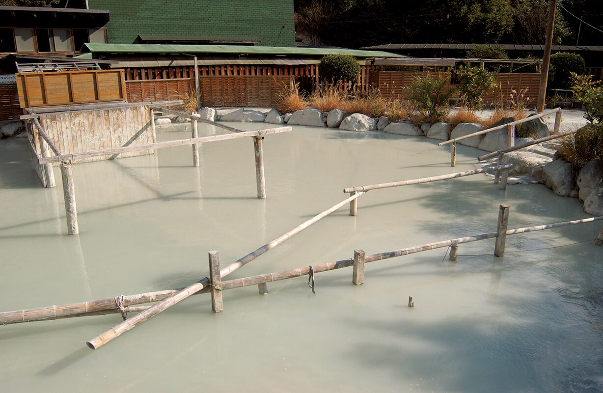
«Беппу онсэн хоё рандо»
- Адрес
- префектура Оита, Беппу, Мёбан, Коя-дзигоку
- Телефон
- +81 977-66-2221
- Часы работы
- 9:00–20:00
- Выходные
- нерегулярно
На песчаном пляже Камэгавы работает «Беппу кайхин сунаю». Здесь лежат в тёплом песке и смотрят на море.
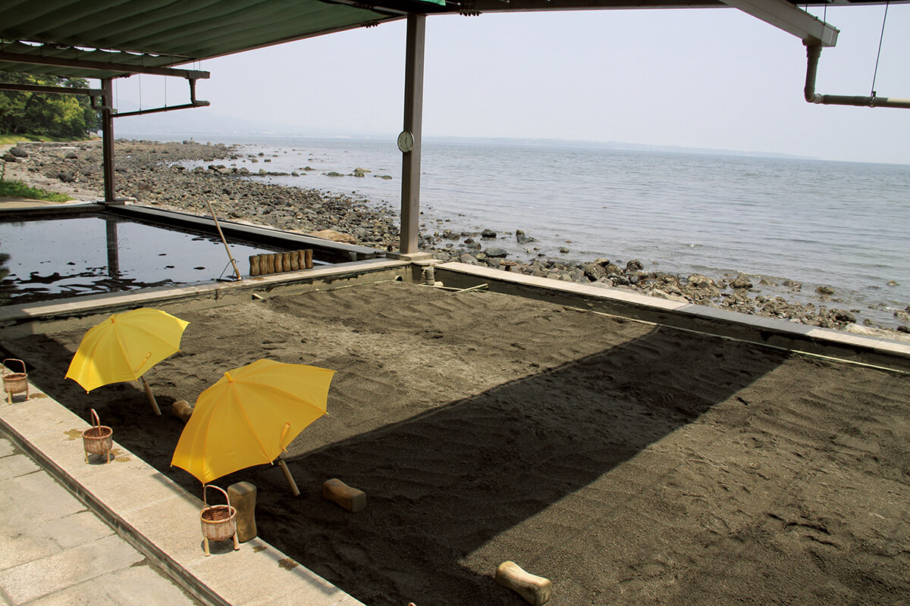
«Беппу кайхин сунаю»
- Адрес
- префектура Оита, Беппу, Сёнингахама
- Телефон
- +81 977-66-5737
- Часы работы
- 8:30–18:00 (с декабря по февраль 9:00–17:00)
- Выходные
- четвёртая среда месяца (если это праздник, то следующий день)
Баня
«Каннава муси-ю»: постель из душистой травы
Старинные японские паровые бани сохранились лишь в немногих местах. Одна из них это «Каннава муси-ю», общественная баня в Каннаве, которой управляет город. По преданию, её основал в 1276 году монах Иппэн.
Парилка представляет собой каменную комнату размером около восьми татами. Пол прогревают паром и застилают листьями аира злакового: трава наполняет воздух ароматом. Этот аир растёт плотными зарослями на камнях у чистых рек, и с древности его использовали как лекарственную траву. Ложишься на травяную постель, вдыхаешь горячий душистый пар и не спеша потеешь.
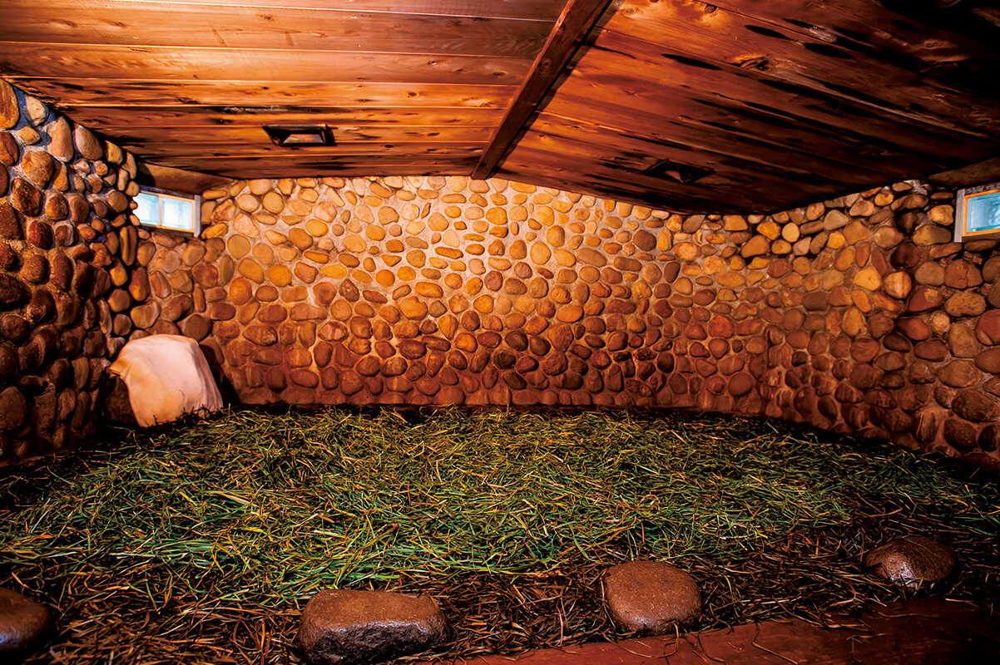
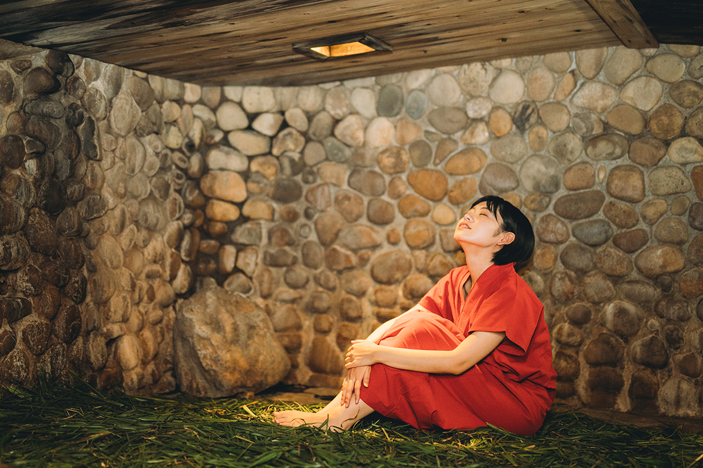
Внутри помещаются по четыре человека в мужской и женской половине. Холодной купели нет, зато есть внутренняя ванна, место для отдыха на воздухе и комната отдыха. Вход стоил 700 иен в 2024 году, юкату можно взять напрокат за 220 иен.
«Каннава муси-ю»
- Адрес
- префектура Оита, Беппу, Каннава-ками, 1-куми
- Телефон
- +81 977-67-3880
- Часы работы
- 7:30–19:30 (последний вход в 19:00)
- Выходные
- третий четверг месяца
- Цены / Вход
- 700 иен, прокат юкаты 220 иен
Фото: Маико Фукуи.